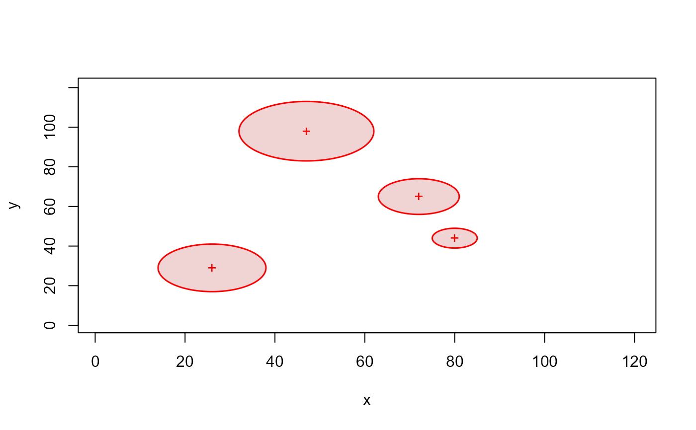
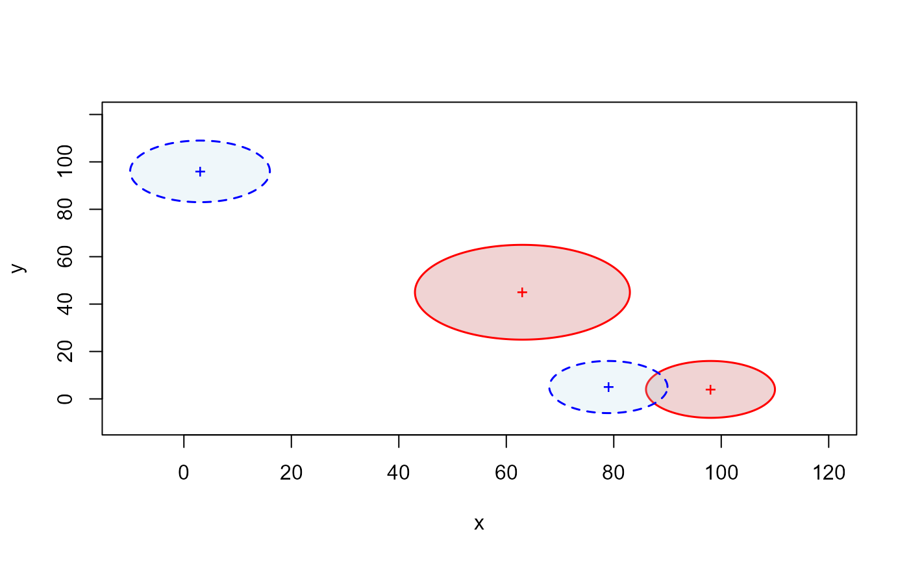

Given x and y coordinates of the circle center as well as the circle radius, this function draw circle(s) and returns a list containing the coordinates of the points simulated to draw the contour of the circle(s).
Usage
circles(
x = NULL,
y = NULL,
radius = NULL,
Res = 500,
center = NULL,
col = NULL,
border = "black",
lwd = 1,
lty = 1,
draw = TRUE
)Arguments
- x
A coordinate vector of circles to plot.
- y
A coordinate vector of circles to plot.
- radius
A single numeric value or a vector specifying the radius of the circles to plot.
- Res
A numeric value corresponding to the resolution of the circles (i.e., the number of points used to draw the circles contour, default = 500).
- center
Either TRUE or a single integers or a vector of integers specifying the symbol(s) or a single character to be used to represent the circle center (see
pointsfor possible values and their interpretation).- col
The color or a vector of colors for filling the circles, the default leaves polygons unfilled.
- border
The color or a vector of colors to draw the border of the circles (default = "black").
- lwd
The value of line width or a vector of line width of the circles border (default = 1).
- lty
An integer or a vector of integer corresponding to line type to be used for drawing circles border, as in par (default = 1).
- draw
A logical value (i.e., TRUE or FALSE) indicating whether the circle(s) should be drawn or not (default = TRUE).
Value
Draw the circles from the coordinates of the center and a value of the circle radius on an existing plot window or, if there is no active plot window, on a new plot window. It also returns a list containing the coordinates of the points simulated to draw the contour of the circle(s).
Examples
set.seed(2023)
plot(NULL, xlim = c(1,120), ylim = c(1,120), xlab = "x", ylab = "y")
# draw 4 red-border and red-filled circles of different size on a new plot
circleCoords1 <- circles(
x = sample(1:100, 4),
y = sample(1:100, 4),
radius = sample(5:15, 4),
center = TRUE,
border = "red",
col = adjustcolor("firebrick", alpha = 0.2),
Res = 500,
lwd = 1.5,
lty = 1,
draw = TRUE
)

str(circleCoords1)
#> List of 4
#> $ :'data.frame': 500 obs. of 2 variables:
#> ..$ x.pos: num [1:500] 85 85 85 85 85 ...
#> ..$ y.pos: num [1:500] 44 44.1 44.1 44.2 44.3 ...
#> $ :'data.frame': 500 obs. of 2 variables:
#> ..$ x.pos: num [1:500] 62 62 62 62 62 ...
#> ..$ y.pos: num [1:500] 98 98.2 98.4 98.6 98.8 ...
#> $ :'data.frame': 500 obs. of 2 variables:
#> ..$ x.pos: num [1:500] 81 81 81 81 81 ...
#> ..$ y.pos: num [1:500] 65 65.1 65.2 65.3 65.5 ...
#> $ :'data.frame': 500 obs. of 2 variables:
#> ..$ x.pos: num [1:500] 38 38 38 38 38 ...
#> ..$ y.pos: num [1:500] 29 29.2 29.3 29.5 29.6 ...
# draw 2 red-border and red-filled circles and 2 blue-border and blue-filled circles of different size on #' a new plot
plot(NULL, xlim = c(-10,120), ylim = c(-10,120), xlab = "x", ylab = "y")
circleCoords2 <- circles(
x = sample(1:100, 4),
y = sample(1:100, 4),
radius = sample(5:20, 4),
center = TRUE,
border = c(rep("red", 2), rep("blue", 2)),
col = c(rep(adjustcolor("firebrick", alpha = 0.2), 2), rep(adjustcolor("lightblue", alpha = 0.2), 2)),
Res = 500,
lwd = 1.5,
lty = c(rep(1, 2), rep(2, 2)),
draw = TRUE
)

str(circleCoords2)
#> List of 4
#> $ :'data.frame': 500 obs. of 2 variables:
#> ..$ x.pos: num [1:500] 83 83 83 83 83 ...
#> ..$ y.pos: num [1:500] 45 45.3 45.5 45.8 46 ...
#> $ :'data.frame': 500 obs. of 2 variables:
#> ..$ x.pos: num [1:500] 110 110 110 110 110 ...
#> ..$ y.pos: num [1:500] 4 4.15 4.3 4.45 4.6 ...
#> $ :'data.frame': 500 obs. of 2 variables:
#> ..$ x.pos: num [1:500] 16 16 16 16 16 ...
#> ..$ y.pos: num [1:500] 96 96.2 96.3 96.5 96.7 ...
#> $ :'data.frame': 500 obs. of 2 variables:
#> ..$ x.pos: num [1:500] 90 90 90 90 90 ...
#> ..$ y.pos: num [1:500] 5 5.14 5.28 5.42 5.55 ...